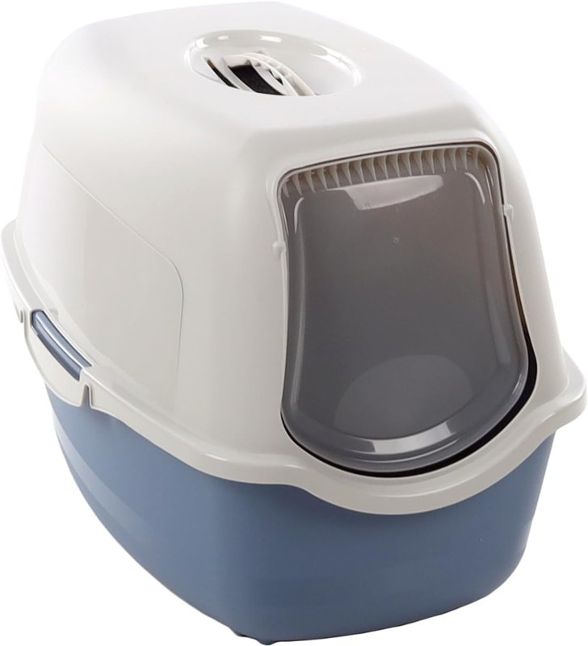
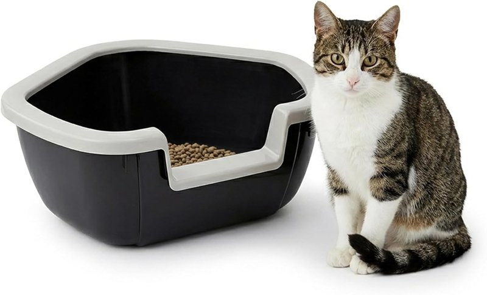

Areneros para gatos: con tapa o descubiertos
Por el equipo de Casa y Comparativa · actualizado el 28 oct 2026
Aviso de afiliados: En calidad de Afiliado de Amazon, obtenemos ingresos por las compras adscritas que cumplen los requisitos aplicables. Si compras desde nuestros enlaces, no te cuesta más. Solo enlazamos ofertas vendidas por Amazon y con Prime.

- Dentro de casa: con tapa y filtro de carbón, el Flamingo Lexie (19,99 €).
- Descubierto: el Ferplast Dama, para esquinas y con entrada baja (34,60 €; quedan pocas unidades).
- Los dos: de plástico reciclado.
Los que recomendamos (vendidos por Amazon, con Prime)
Uno con tapa para dentro de casa y otro descubierto.

Flamingo Lexie con filtro
- Filtro de carbón reemplazable
- Tapa extraíble con puerta batiente
- 56 × 39 × 39 cm; 1,18 kg
- 98 % plástico reciclado
- 4,5 sobre 5 con 1.830 opiniones

Ferplast Dama
- 57,5 × 51,5 × 22 cm; 920 g
- Forma de esquina y marco extraíble
- Entrada baja: gatitos y gatos mayores
- Plástico reciclado
- 4,7 sobre 5 con 974 opiniones
Precios, medidas y valoraciones de las fichas de Amazon.es (28 oct 2026). Ninguno tenía el aviso de «devuelto con frecuencia».
Comparativa rápida
| Modelo | Tipo | Precio* | Medidas | Material | Nota (opiniones) |
|---|---|---|---|---|---|
| Flamingo Lexie | Con tapa + filtro | 19,99 € | 56 × 39 × 39 cm | Plástico reciclado | 4,5 (1.830) |
| Ferplast Dama | Descubierto | 34,60 € | 57,5 × 51,5 × 22 cm | Plástico reciclado | 4,7 (974) |
* Precio provisional en Amazon.es el 28 oct 2026; puede cambiar. En el móvil se ocultan algunas columnas.
Nuestra experiencia
El arenero depende de dónde lo pongas. Si tienes terraza, nos quedamos con uno descubierto: a los gatos les encanta escarbar y el olor que se acumula en uno cerrado les molesta. Eso sí, en la terraza los nuestros tiraban la arena fuera, así que conviene que tenga bordes altos o ponerle una alfombrilla. Dentro de casa, en cambio, lo práctico es el cerrado, con filtro para el olor.
Y la limpieza importa tanto como el modelo: no basta con cambiar la arena, porque el plástico acaba cogiendo olor.
El arenero:
- Vacía la arena cuando toque y limpia la bandeja a fondo.
- Usa lejía diluida en agua fría o templada, nunca hirviendo (desprende más vapores).
- Aclara muy bien y deja que se seque del todo antes de poner la arena nueva.
Los cuencos de comida y agua, aparte y sin lejía: agua y jabón, aclarar muy bien y dejar que se sequen.
Qué mirar antes de comprar
Garantía: los dos tienen los 3 años de garantía legal al comprarlos a Amazon; garantía propia de cada marca: sin dato.
Preguntas rápidas
¿Con tapa o sin tapa?
Dentro de casa, con tapa y filtro, por el olor. En terraza, descubierto: a muchos gatos no les gusta el olor que se acumula dentro.
¿Cada cuánto se limpia?
Retira lo sucio a menudo y, cada vez que cambies la arena, limpia la bandeja a fondo, aclara bien y deja secar.
¿Cada cuánto se cambia el filtro?
La ficha del Flamingo dice que el filtro es reemplazable, pero no cada cuánto: sin dato.
Más en «El rincón de tu mascota»
Fuentes y fechas
- Precios, vendedor (Amazon), valoraciones y medidas: fichas de Amazon.es consultadas el 28 oct 2026 a las 12:14-12:16, con precios y títulos confirmados a las 19:08 (hora de Madrid; entrega en Madrid, precios con IVA):
Flamingo Lexie (B0CLLQ3NSV); Ferplast Dama (B00F5ZYL8C). - Prime: comprobado el 28 oct 2026 entre las 18:45 y las 19:15 (hora de Madrid), con entrega en Madrid; los dos lo tienen.
- Pruebas de laboratorio independientes: sin dato.
Aviso de afiliados: En calidad de Afiliado de Amazon, obtenemos ingresos por las compras adscritas que cumplen los requisitos aplicables. Precios y disponibilidad cambian: revisa la ficha de Amazon antes de comprar.